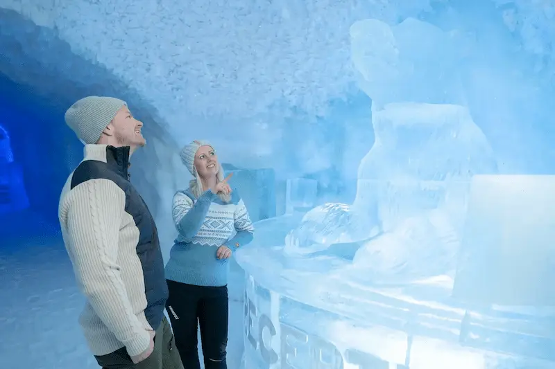

Välkommen till Frostpalatset

Världens första hotell byggt av snö och is från Torne älv. Varje vinter skapar internationella konstnärer nya, unika konstsviter där gästerna sover i minusgrader på sängar av is. Tack vare den solenergidrivna delen Icehotel 365 går det nu även att uppleva iskonst och en isbar året runt.
Varför Frostpalatset?
Hos oss handlar din vistelse om mycket mer än bara en säng för natten. Vi kombinerar stilren skandinavisk design med personlig service och högsta komfort för att skapa en harmonisk miljö där du kan koppla av på riktigt. Oavsett om du är här för en affärsresa, en weekend för två eller en familjesemester, anpassar vi oss för att din upplevelse ska bli så smidig och minnesvärd som möjligt.
- Handskulpterade rum: Varje svit är ett unikt konstverk karvat direkt ur klaris av internationella konstnärer.
- Unik sovupplevelse: Sov varmt i polarsovsäckar ovanpå mjuk träbas och äkta renfällar i ständiga –5 °C.
- Exklusiv Isbar: Njut av uppfriskande drycker serverade ur handgjorda glas tillverkade helt av ren is.
- Ett med naturen: Hotellet byggs upp på nytt varje vinter och smälter spårlöst tillbaka till naturen på våren.
Att sova i en handskulpterad konstsvit gjord helt av kristallklar is, omsluten av magisk tystnad på en säng täckt av varma renfällar, är en helt oförglömlig upplevelse. Efter en natt i kylan vaknar du upp till en rykande het kopp lingondricka i bastuvärmen, redo att möta det dansande norrskenet utanför.